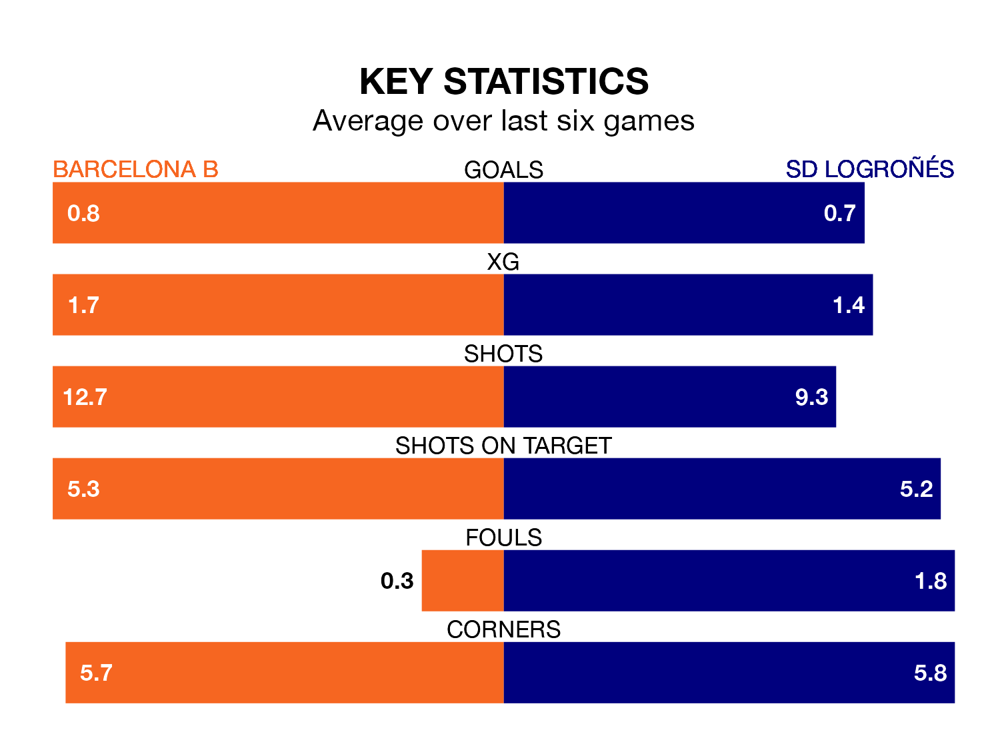

Barcelona B are heavy favourites to keep all three points at home in Sunday's early kick-off against SD Logroñés.
Barcelona B, who sit sixth in Primera Division RFEF Group 1 with 21 games played, are priced at 1.6 to seal victory.
Sitting 12 places and 14 points behind them in the table, Logroñés are 5.8 to win with *Betting Company*, while the draw is at 3.7.
With 29 goals in 21 games so far this season, Barcelona B are the league's joint-third-highest scorers with 1.4 goals per game. But they are conceding more than average too, letting in 24 goals at a rate of 1.1 per game.
Logroñés, meanwhile, are below average scorers, with 0.9 goals per game, compared to a league average of 1.0. They have conceded 1.5 goals per game.
The hosts are in mixed form in Primera Division RFEF Group 1, with two wins and two draws from their last six games.
With a win and a draw over that period, the away team's form is worse – they have taken four points from 18, compared to Barcelona B's eight.
In the last three years, Barcelona B and Logroñés have played each other on three occasions. Barcelona B won one of them and Logroñés the other.
Their last meeting was on August 27, when Logroñés won 1-0 at home.
Barcelona B's last match was on January 27, a 2-1 win against CF Fuenlabrada.
Logroñés drew 1-1 with CE Sabadell last time out, also on January 27, with Jordi Escobar Fernández on the scoresheet.
Updated: 15:45 (UTC), 02/02/24